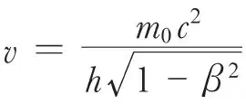
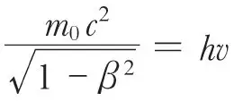

英文
英文德布罗意
编者按
物理学家们在1923年的主要工作是探讨普朗克和爱因斯坦关于光的量子性质的发现。虽然光是一种波，但它似乎也具有粒子的特性。玻尔的原子模型已经用到了电子的量子化原则。路易斯·德布罗意在本文中提出像电子这样有质量的粒子可能也有相对应的波，这一观点为玻尔的理论奠定了更坚实的基础。德布罗意认为，玻尔理论中的结果可以由电子波波长取整数以适合核外电子轨道得到。1927年，德布罗意的假设就被电子在晶体中的衍射实验成功证实了。 英文
量子关系式，即能量=普朗克常数h×频率，使人们可以把一个周期现象与任一孤立的物质或能量联系起来。与物体一起运动的观察者观测到的周期现象的频率将由物体的内部能量，即“静止质量”决定。当物体相对于观察者以βc的速度匀速运动时，由洛仑兹–爱因斯坦时间变换公式，观察者观测到的频率变低。我已经指出（巴黎科学院的《法国科学院院刊》，9月10日和24日），这位固定不动的观察者总能通过波的相位看到频率为

的内禀周期性现象，该公式是依据量子关系式推导出来的，利用了运动物体的总能量，并假设波以c/β的速度传播。这个速度大于c的波不能携带能量。 英文
频率为v的辐射必须被看成由内部质量极小（小于10–50克）的光原子组成，其运动速度（由公式

决定）很接近于c。这些光原子沿着频率为v，速度为c/β（仅比c略高一点）的非实物波缓慢行进。 英文
“相位波”对于确定任何物体的运动都是至关重要的。我已经指出，玻尔原子轨道的稳定条件表明相位波的波长应与闭合轨道的长度相匹配。 英文
当光原子穿过一个小孔时，它的路径就不再是一条直线，即产生了衍射现象。因此必须摒弃惯性原理，我们必须假定，任何运动物体总沿着它的“相位波”的放射路径行进。因此，当它经过一个足够小的孔时，其轨迹会发生弯曲。如同几何光学被波动光学取代一样，实物粒子的动力学也应经历相应的变革。我们可以利用基于波动理论的假设解释干涉和衍射产生的条纹。借助这些新思想，还有可能把漫射和散射现象与光的不连续性联系起来，解决由量子引出的几乎所有问题。 英文
（王锋 翻译；刘纯 审稿）